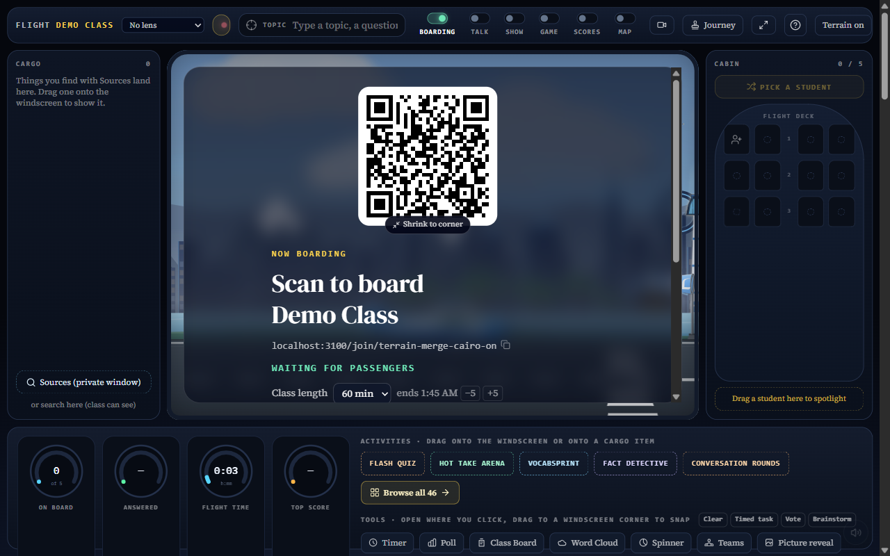

No main merge or push. Runtime SVG/API errors and unavailable mock phone broadcasts prevent release verification.
Full report and off-switch instructions

Local default-on teacher control only. Not a successful terrain flight.